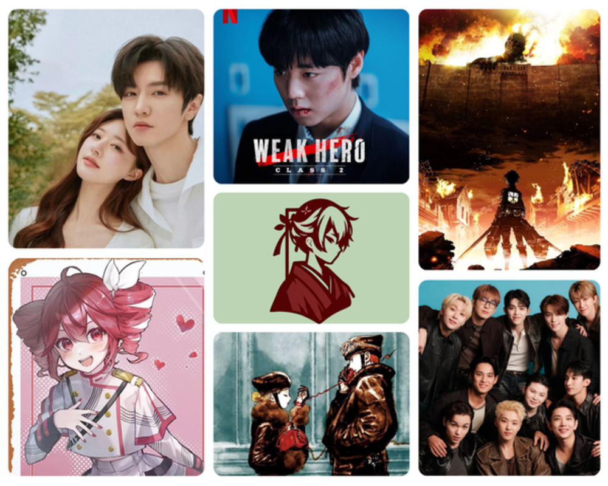
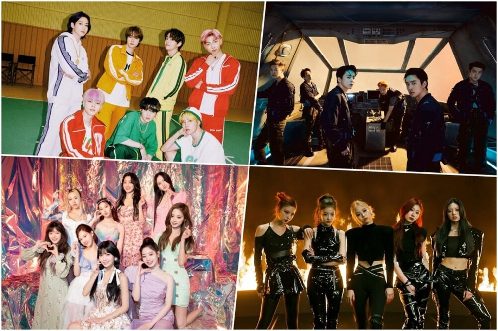
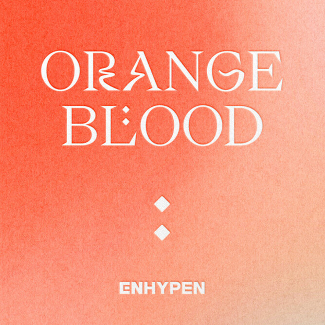
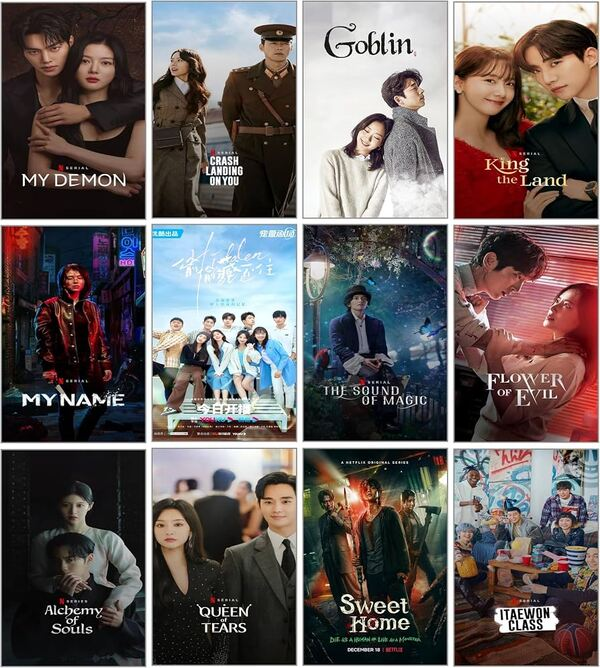
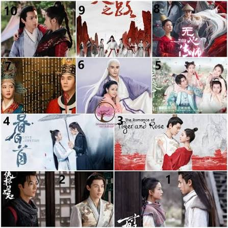
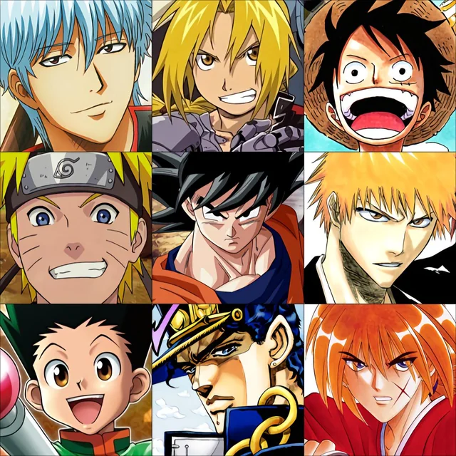
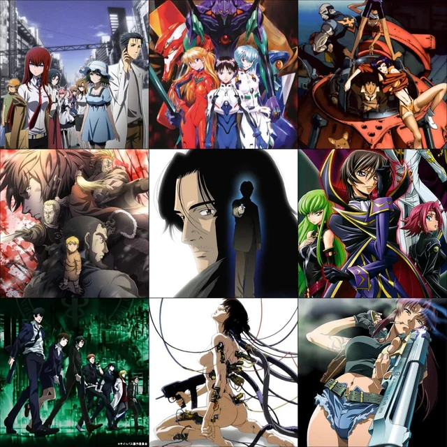
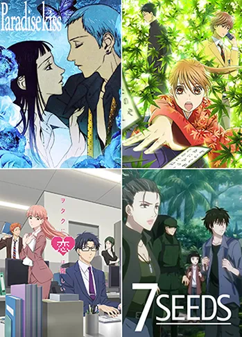
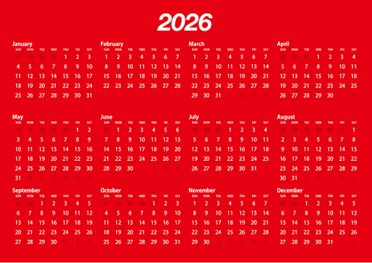
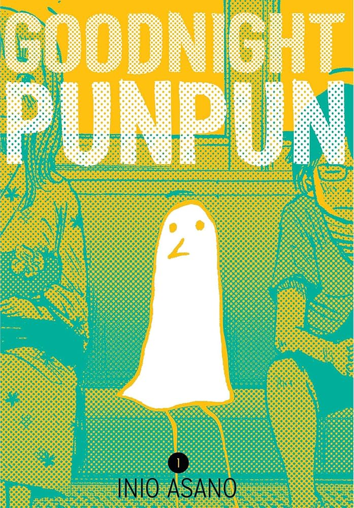

Hallyu - Otaku
Tu dosis diaria de diversión
Sobre nosotros
¡Bienvenido a Hallyu - Otaku! Este es el espacio definitivo diseñado para todos los amantes del K-pop, los dramas asiáticos, el anime y el manga. Nuestro objetivo es ofrecerte una plataforma bilingüe y ultra rápida donde podrás informarte de manera totalmente libre y al instante sobre las últimas novedades, lanzamientos y tendencias de tus temas favoritos.
Más que un sitio de noticias, somos una comunidad: un espacio seguro, abierto y respetuoso donde puedes conectar con otros usuarios, compartir tus teorías y expresar tu opinión con total libertad. ¡Tu dosis diaria de diversión y cultura asiática comienza aquí!
@chandvp #STRAYKIDS: this and that 😳 broo the chorus sounds so fire • 𝘧𝘢𝘯𝘤𝘢𝘮 | This&That MV Teaser • {#skz#kpopedit#fyp#straykidscomeback ♬ original sound - luu
@tj_edtz07 Fullmetal Alchemist || No Vacancy || Edit remake ||#fullmetalalchemist #fyp #edit #fullmetalalchemistedit #blowthisup ♬ original sound - Tj_edtz

K-pop
Aquí encontraras la información más reciente que involucra a tus grupos favoritos de K-pop.
InformaciónAquí encontraras datos curiosos acerca de los MVs de tus grupos favoritos de K-pop.
Información
Aquí encontraras información acerca de los comebacks por venir de cualquier grupo de K-pop.
Información
Aquí encontraras información acerca de donde conseguir cualquier álbum de K-pop.
Aquí encontraras información sobre photocards de tu idol favorito.
Dramas asiáticos

Aquí encontraras información y datos curiosos sobre dramas coreanos.

Aquí encontraras información y datos curiosos sobre dramas chinos.
Aquí encontraras información y datos curiosos sobre dramas japoneses.
Aquí encontraras información y datos curiosos sobre dramas tailandeses.
Anime

Aquí encontraras información y datos curiosos sobre animes dirigo principalmente a adolescentes varones de entre 12 y 18 años. Sus historias se centran en la acción, las batallas épicas, el compañerismo y la superación personal del protagonista a través del esfuerzo constante.

Aquí encontraras información y datos curiosos sobre animes cual público objetivo son los hombres adultos a partir de los 18 años. Al buscar una audiencia madura, presenta tramas mucho más complejas que incluyen violencia, política, dilemas psicológicos, filosofía y realismo crudo.

Aquí encontraras información y datos curiosos sobre animes diseñados de forma directa para adolescentes mujeres de entre 12 y 18 años. El núcleo de estas obras suele ser el romance, el desarrollo de las relaciones interpersonales, la introspección y el crecimiento emocional de los personajes.
Aquí encontraras información y datos curiosos sobre animes donde el protagonista es transportado, reencarnado o atrapado en un universo completamente diferente al suyo. Por lo general, este nuevo entorno suele estar dominado por la magia medieval o las reglas de un videojuego.
Aquí encontraras información y datos curiosos sobre animes que se se caracterizan por retratar el día a día de un grupo de personajes. No existen grandes amenazas mundiales ni poderes mágicos, sino que se disfruta de la comedia, el drama y la rutina diaria en la escuela o el trabajo.

Aquí encontraras información y datos curiosos sobre animes que se enfoca en un público femenino adulto y maduro. A diferencia del shojo, el josei aborda el amor, el desamor, la sexualidad y la vida laboral desde una perspectiva sumamente realista y sin idealizaciones cotidianas.
Manga

Aquí encontraras la información más reciente sobre adaptaciones animadas de tus mangas favoritos.

Aquí encontraras datos curiosos sobre diferentes mangas (no importa la época) de los que no te habias dado cuenta.
Aquí encontraras información acerca de la historia de fondo de tu personaje favorito de cualquier manga.
Foro de la Comunidad
¡Únete a la conversación! Publica tus opiniones, teorías o preguntas sobre K-Pop, Animes o Dramas.
Crear una nueva publicación
¿Cómo contactarnos?
Información de contacto:
@Hallyu_Otaku_2026
7895-0169
hallyuotaku_2026@gmail.com